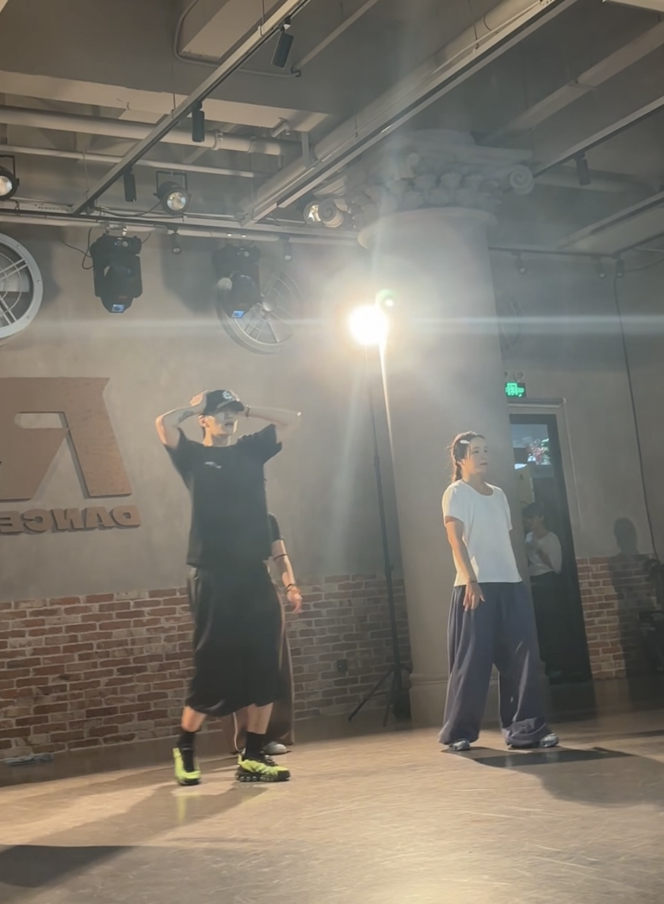

两年，数不清的八拍。跟着你，
序章 · 故事的开始
致亲爱的老师
跟着你，
跳过了两年。
从第一个八拍，到无数次再来一遍。
把这一路的片段，慢慢翻给你看。

献给一起跳舞的日子
也献给，让我喜欢上这些日子的你。
把心意，藏在每一步里也献给，让我喜欢上这些日子的你。
这里写这一刻的名字
这里留给这张照片的故事：当时发生了什么，为什么记得，或是想对老师说的一句话。
这里写这一刻的名字
这里留给这张照片的故事：当时发生了什么，为什么记得，或是想对老师说的一句话。
这里写这一刻的名字
这里留给这张照片的故事：当时发生了什么，为什么记得，或是想对老师说的一句话。
这里写这一刻的名字
这里留给这张照片的故事：当时发生了什么，为什么记得，或是想对老师说的一句话。
03 / 小小瞬间，满满回忆
把你的名字，拼进我们的回忆里。
01 / 这支舞，送给你
这一次，跳给你看。
01把这支舞，留在这一页。
横屏视频 · 完整跨越左右两页
仅在当前页面预览，不会上传舞蹈 01一支舞，一段回忆。
这里写这支舞的名字
这里可以讲讲为什么选这支舞、练习时的小故事，或是想用它对老师说的话。
04 / 藏在舞步之间的话有些话，
✳写在跟着你跳舞的第二年
有些话，
跳舞以外，
也想告诉你。
✳写在跟着你跳舞的第二年以下是示意文案，之后换成你的话
亲爱的老师：
原来，我们已经一起跳舞两年了。
如果把这两年数成八拍，大概已经数不清了。但有些瞬间，我一直记得：一个终于跟上的动作，一次练习结束后的笑，还有每一句“再来一遍”。
谢谢你陪我一点点进步，也让我在音乐响起的时候，比从前更勇敢一点。
以后，也想继续跟着你跳下去。
两周年快乐。
你的学生 ♡
你的学生 ♡
problemanglenumber
telephonemanzintemichico
don'tjealousmeiadoreyou
bananzakillinitgirlsanta
myloverparis4minutes
beautifullovelolo
rollinneeditbaianapiano
confidentbusybody
jerichogodly
LoveDon'tCostADime
painmylovrbrucelee
blisslowerbody
K编舞
未完待续...